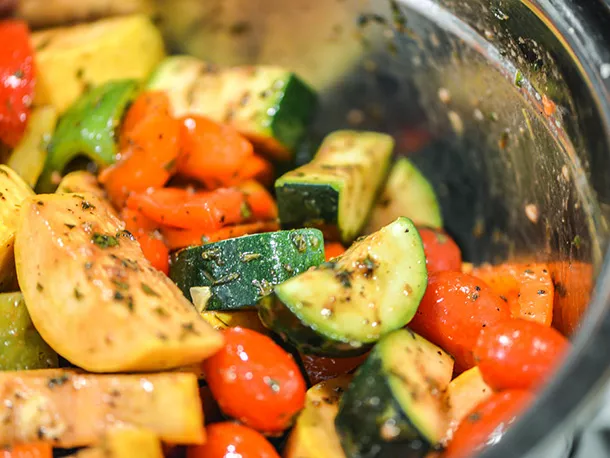
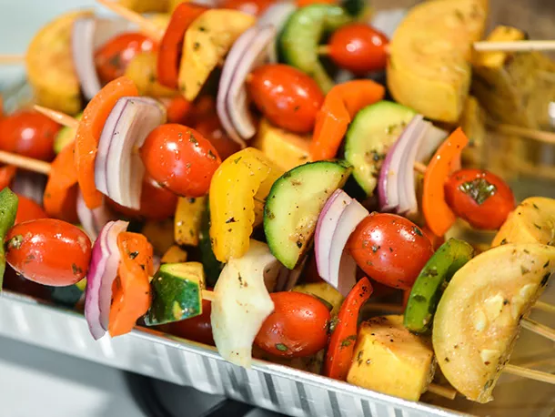
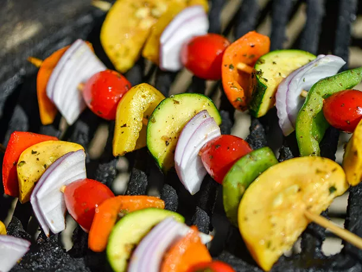

Balsamic Vegetable Skewers Recipe

Description
Balsamic vinaigrette adds a tanginess to fresh vegetables that have been skewered and grilled until lightly charred.
Ingredients
1/4 cup balsamic vinegar
1 tablespoon finely chopped parsley
1 tablespoon fresh juice from 1 lemon
2 teaspoons freshly minced garlic (about 2 medium cloves)
2 teaspoons Dijon mustard
2 teaspoons finely chopped thyme
Kosher salt and freshly ground black pepper
1 large zucchini, ends trimmed, halved lengthwise, and cut into 3/4-inch slices
1 large yellow squash, ends trimmed, halved lengthwise, and cut into 3/4-inch slices
1 large red onion, cut into 1-inch cubes and separated into 3-layer segments
2 medium red, yellow, or orange bell peppers, stemmed, seeded, and cut into 1-inch squares
1 pint grape tomatoes
- For the Vinaigrette: Whisk together balsamic vinegar, oil, parsley, lemon juice, garlic, mustard, and thyme in a small bowl. Season with salt and pepper. Place all vegetables in a large bowl, add vinaigrette, and toss to coat.

- For the Skewers: Skewer vegetables, alternating between zucchini, yellow squash, red onion, bell peppers, and tomatoes. Reserve any remaining vinaigrette in bowl.

- Light one chimney full of charcoal. When all charcoal is lit and covered with gray ash, pour out and spread the coals evenly over entire surface of coal grate. Alternatively, set all the burners of a gas grill to high heat. Set cooking grate in place, cover grill and allow to preheat for 5 minutes. Clean and oil the grilling grate. Grill skewers, turning, until vegetables are browned around the edges and beginning to soften, 5-8 minutes total. Transfer skewers to platter and spoon on reserved vinaigrette. Serve immediately.
